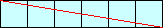
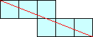
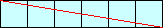
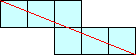
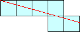
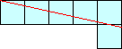
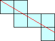
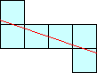
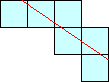

|  |  |  |
|  |  | |
|  |  |  |  |  |
Notice that the top three polyominoes are special since a line between two of the corners of the polyomino intersects every square, and the bottom 5 polyominoes are not special. How many linear n-ominoes are there? How many are special? What about in higher dimensions? What is the smallest value of n for which the linear n-ominoes pack into into a rectangle? How about linear polyhexes and polyiamonds?
Here is the number of linear n-ominoes, furnished by Joseph DeVincentis and Philippe Fondanaiche:
| n | 1 | 2 | 3 | 4 | 5 | 6 | 7 | 8 | 9 | 10 | 11 | 12 |
|---|---|---|---|---|---|---|---|---|---|---|---|---|
| LP(n) | 1 | 1 | 2 | 3 | 5 | 8 | 11 | 17 | 22 | 31 | 38 | 52 |
Trevor Green defines a linear polyomino to be semi-special if its line can be drawn through one of the corners of the polyomino. He then notes that almost all semi-special linear polyominoes correspond to rational numbers of the form a/b, with a+b≤n, a≤b and gcd(a,b)=1. The correspondence is that the slopes of the lines is a/b–ε, for some small ε. Unfortunately, some pairs of rational numbers yield rotations of the same linear polyomino when n≤7.
In 2012, Trevor Green found the following formula that counts semi-special linear n-ominoes:
 n/2
n/2
Mike Reid thinks he can show that the only sets of linear n-ominoes that can tile a rectangle are the trivial sets n=1 and n=2.
Joseph DeVincentis found that in higher dimensions, the projections of any linear polyomino are linear polyominoes, and the projections of a special linear polyomino are special linear polyominoes. As a result, all of the dimensions of the box must be pairwise relatively prime. The smallest nontrivial one of these is the one inside the 2×3×5 box.
If you can extend any of these results, please e-mail me. Click here to go back to Math Magic. Last updated 10/24/12.